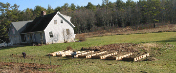

| Starting a new garden My new Maine 2006 garden is near the house so it is convenient for tending and picking. Raised beds: We have a high water table, so I had to build raised beds. Beds are 4’ wide x 10’ long with space between to walk and move a wheelbarrow. The boards are 2” thick, 10” high rough-sawn hemlock from a local sawmill. The existing lawn and vegetation were not removed, but buried under deep soil in the beds, and deep wood chips between beds for a dry, clean and weed-free walkway. Soil preparation: The soil was heavy clay and I did not see any earthworms. There was no extra soil to fill the raised beds, so I bought topsoil. This soil needed organic matter, lime, and rock powders for trace minerals. In the past, to make compost, I had sources of cow manure and leaves, but starting again I had to find new sources. Raising animals (sheep, chickens and geese) was a source for manure and bedding materials (hay and straw.) Garden excess and weeds were fed to the animals, and other plant material went on the compost pile. Double digging: For a faster start creating more organic matter in my soil, I double dug the beds. Dig a foot wide shallow trench, 3-4" deep, across the width of the bed, and fill it with material to decompose (leaves, animal manure and bedding, mulch hay, etc.). Dig another trench beside it and put the soil (2"-4") from this trench on top of the compostable material in the previous trench. Continue trenching and filling for the length of the bed. If the material is buried too deep, it will not decompose properly. |
 | ||||||||||
| Corner brackets for raised beds are sold, but are expensive. My first raised beds were fastened with 6” long screws. A corded drill with hex bit was needed for the power to drive in the screws. On the internet, I saw the use of Simpson Strong-Tie Plates, which can be easily bent to a 90° angle and then fastened with smaller screws using a battery screw gun. I now use these plates. (Support wooden stakes on the bed sides are now not needed). |
|||||||||||
| Perennial plants Plants that come up year after year such as asparagus, rhubarb, berry bushes and grapes have their own beds outside of the main vegetable garden. Fruit trees have their own area. Below: Fruit trees, two asparagus beds, and blueberries, raspberries and strawberries (long bed) with grapes in back. |
|||||||||||